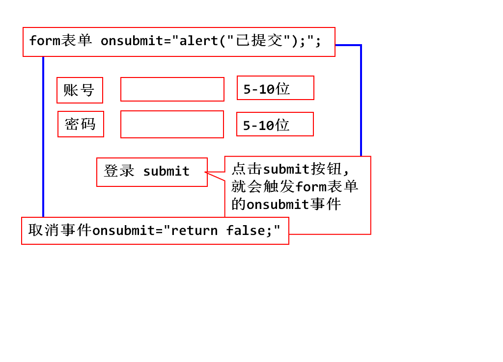

<body>
<form action="http://www.tmooc.cn"
onsubmit="return checkUser()*checkPwd()==1;">
<div>
账号:<input type="text" id="username"
onblur="checkUser();">
<span id="msg_user">5-10位数字,字母,下划线</span>
</div>
<div>
密码:<input type="password" id="pwd"
onblur="checkPwd();">
<span id="msg_pwd">5-10位数字,字母,下划线</span>
</div>
<div>
<input type="submit" value="登录">
</div>
</form>
</body>
<style type="text/css">
.ok{
color: #0f0;
}
.error{
color: #f00;
}
</style>
<script type="text/javascript">
function checkUser(){
//获取有户名的字符串
var code=document
.getElementById("username").value;
//获得span对象
var span=document.getElementById("msg_user");
//获得正则对象
//5-10位数字,字母,下划线
var reg=/^\w{5,10}$/;
//开始验证
if(reg.test(code)){
//格式正确,span字体变绿
span.className="ok";
return true;
}else{
span.className="error";
return false;
}
}
function checkPwd(){
var code=document
.getElementById("pwd").value;
var span=document.getElementById("msg_pwd");
var reg=/^\w{5,10}$/;
if(reg.test(code)){
span.className="ok";
return true;
}else{
span.className="error";
return false;
}
}
</script>
var fn1=function(){alert(1111);}
function fn2(){
alert(1111);
}
- 不定义返回值的类型
- 默认返回值是undefined
- 可以使用return返回具体的值
function x(){
alert(arguments[0]);
}
x();
x(1,2);//不报错,问题是1和2究竟哪去了

function add(){
var sum=0;
for(var i=0;i<arguments.length;i++){
sum+=arguments[i];
}
return sum;
}
typeof()
isNaN();
parseInt();
parseFloat();
var str="2+3";
eval(str);
var str="function aa(){alert(1111);}aa();";
eval(str);
<body>
<input type="text" id="num">
<input type="button" value="计算"
onclick="cal();">
</body>
<script type="text/javascript">
function cal(){
var input=document.getElementById("num");
var num=input.value;
//开始计算
try{
input.value=eval("("+num+")");
}catch(e){
input.value="Error";
}
}
</script>

document 窗口中显示的HTML文档对象
history 浏览过的历史记录对象
location 窗口文件地址对象
screen 屏幕对象
navigator 浏览器相关信息对象
弹出框
<body>
<input type="button" value="按钮1"
onclick="fn1();">
<input type="button" value="按钮2"
onclick="fn2();">
<input type="button" value="按钮3"
onclick="fn3();">
</body>
<script type="text/javascript">
//1.弹出框
function fn1(){
window.alert("你好");
}
//2.确认框
function fn2(){
var flag=window.confirm("how are you!!");
console.log(flag);
}
//3.输入框
function fn3(){
var str=window.prompt("中午吃的什么?");
console.log(str);
}
</script>
setInterval(exp,time);
exp:要执行的js语句,一般为匿名函数
time:时间周期,毫秒
返回值:返回已经启动的定时器ID
clearInterval(ID);停止定时器
//周期性定时器
function fn4(){//每一秒打印一个数 5,4,3,2,1
var num=5;
var id=setInterval(function(){
console.log(num--);
if(!num){// num==0
clearInterval(id);
}
},1000);
console.log("蹦蹦");
}

<div>
<input type="button" value="开始" onclick="start();">
<input type="button" value="停止" onclick="stop();">
<p id="clock"></p>
</div>
<style type="text/css">
#clock{
width: 200px;
height: 30px;
border: 2px solid #f00;
text-align: center;
line-height: 30px;
font-size: 20px;
}
</style>

<script type="text/javascript">
var id;
function start(){
if(id){//id在undefined和null的情况才会启动定时器
return;
}
var oP=document.getElementById("clock");
id=setInterval(function(){
var d=new Date();
var now=d.toLocaleTimeString();
oP.innerHTML=now;
},1000);
}
function stop(){
//id非空时,定时器处于启动状态,这样可以停止
if(id){
clearInterval(id);
//如果此时不给ID赋值null
//下次点击启动时,会进入if块直接返回.
id=null;
}
}
</script>
setTimeout(exp,time);
exp:执行的代码
time:延迟时间
返回值为id
clearTimeout(id);

<script type="text/javascript">
var id;
function send(){
var oP=document.getElementById("msg");
oP.innerHTML="发送中...";
//推迟三秒发送
id=setTimeout(function(){
oP.className="ok";
oP.innerHTML="发送成功";
},3000);
}
function cancel(){
var oP=document.getElementById("msg");
oP.className="error";
oP.innerHTML="已撤销";
clearTimeout(id);
}
</script>
<style type="text/css">
.ok{
color: #0f0;
}
.error{
color: #f00;
}
</style>
</head>
<body>
<div>
<input type="button" value="发送"
onclick="send();">
<input type="button" value="撤销"
onclick="cancel();">
</div>
<p id="msg"></p>
</body>